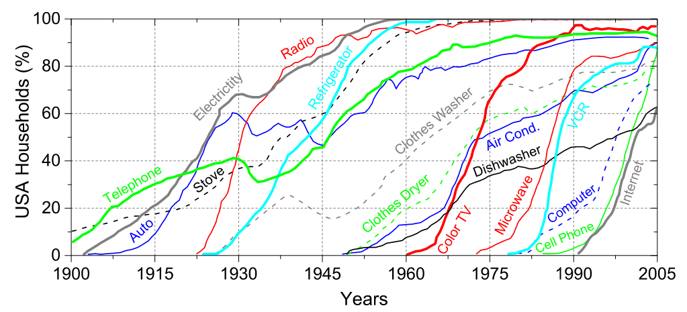
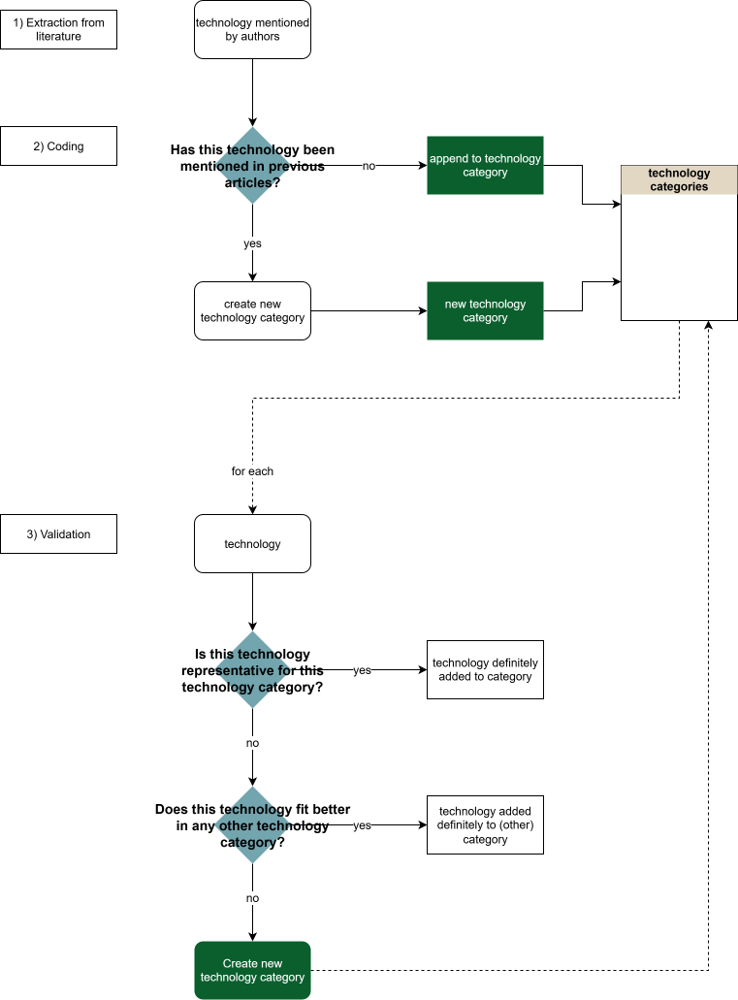

Classifying Technology and its Adoption Rates
Comparison of Suggestions
Overview
- Summary
- Macroscopic and microscopic perspectives for adoption of technologies in the USA
- HATCH dataset
- ISIC
- General Purpose Technologies
- Own, bottom up classification
Summary
To systematically analyze technology-related threats, we require a consistent and transparent way to classify technologies. Without a structured classification scheme, categories risk becoming arbitrary (e.g., distinguishing “smartphone” from “mobile phone”), overly granular, or inconsistently defined across studies.
While none of the approaches are optimal, they all offer different advantages and disadvantages. For more detail, each suggestion is elaborated on in further detail. The “technologies” section of options (1) through (4) offers an interactive database where you can explore the technologies listed in each suggestion.
The following five suggestions to address this classification are discussed:
(1) Household Adoption (Carvalho et al., 2020) 15 consumer-facing household technologies in the 20th-century USA. Empirically grounded with adoption rates, conceptually simple, but historically limited and narrow in scope. (➡️ Details)
(2) HATCH Dataset (Nemet et al., 2023) Large-scale dataset (n = 147) covering agricultural, industrial, and consumer technologies with annual time series data up to 2022. Strong empirical grounding, but very broad, environmentally oriented, and often not consumer-focused. (➡️ Details)
(3) ISIC (UN Classification System) Internationally standardized industrial classification with hierarchical structure. Globally applicable and comparable, but classifies economic activities rather than technologies directly and may lack granularity. (➡️ Details)
(4) General Purpose Technologies (GPTs) Macro-level classification based on historically transformative technologies since 1450. Comprehensive, but broad, potentially arbitrary, and difficult to operationalize at the product level. (➡️ Details)
(5) Bottom-up Classification Project-specific taxonomy developed inductively from the technologies relevant to the research question. Flexible, but requires more work from our side. (➡️ Details)
Summary of Advantages and Disadvantages
| Option | Advantages | Disadvantages |
|---|---|---|
| (1) Macroscopic & microscopic adoption (Carvalho et al., 2020) |
|
|
| (2) HATCH dataset (Nemet et al., 2023) |
|
|
| (3) ISIC (UN) |
|
|
| (4) General Purpose Technologies (GPTs) |
|
|
| (5) Bottom-up classification |
|
|
(1) Macroscopic and microscopic Perspectives for Adoption of Technologies in the USA
This classification approach is based on Carvalho et al. (2020), who analytically model and empirically examine the adoption of innovations by American households during the 20th century. Their empirical analysis relies on historical adoption data and a selection of technologies originally compiled in a 2008 New York Times article.
The authors analyze adoption of 15 major household technologies in the USA, focusing on adoption dynamics across the 20th century. The technologies represent consumer-facing household innovations (e.g., electricity, telephone, refrigerator, internet).

Metadata
| Dimension | Scope |
|---|---|
| Time period considered | 20th century |
| Geographical scope considered | United States |
Evaluation
| Advantages | Disadvantages |
|---|---|
|
|
Technologies
\(n = 15\)
(2) HATCH Dataset
This classification approach is based on the HATCH dataset developed by Nemet et al. (2023). The dataset compiles a wide range of agricultural, industrial, and consumer technologies adopted over the past century to better understand technology scale-up dynamics.
It provides annual time series data from the early 20th century to 2022, enabling systematic comparisons of long-run growth trajectories across technologies. While the dataset broad and diverse, it is also a very encompassing categorization that is most frequently not applicable to the consumer-facing context. Additionally, since the dataset is created from an environmental perspective, many technologies in focus are agricultural and industrial, as they are pertinent to the research questions of Nemet et al. (2023).
Metadata
| Dimension | Scope |
|---|---|
| Time period considered | up to 2022 |
| Geographical scope considered | Global |
Evaluation
| Advantages | Disadvantages |
|---|---|
|
|
Technologies
\(n = 147\)
(3) The International Standard Industrial Classification of All Economic Activities (ISIC)
Another option for classifying technologies is to rely on the International Standard Industrial Classification of All Economic Activities (ISIC), developed by the United Nations. ISIC provides a standardized framework for categorizing economic activities into hierarchical sectors, divisions, groups, and classes.
Using ISIC to classify technologies would involve assigning each technology to the industry in which it is primarily developed, produced, or economically embedded (e.g., telecommunications, manufacturing, information services). This approach allows technologies to be grouped according to established industrial sectors rather than product-level characteristics.
Metadata
| Dimension | Scope |
|---|---|
| Time period considered | Contemporary classification system (current revision: ISIC Rev.4) but historically relevant and applicable (last revision in 2023) |
| Geographical scope considered | Global standard |
Evaluation
| Advantages | Disadvantages |
|---|---|
|
|
Technologies
\(n_{min} = 22, n_{max} = 830\)
Filter for “Level 1” to see the overarching levels (\(n = 22\)), or lower levels to see more granular perspectives. Filters must be typed in the text box above the column.
(4) General Purpose Technologies
A further option is to classify technologies based on the concept of General Purpose Technologies (GPTs). Artificial intelligence is frequently discussed as a contemporary GPT (e.g. Calvino, Haerle, and Liu 2025), and earlier GPTs are documented by Lipsey, Carlaw, and Bekar (2005), who identify major transformative technologies since 1450. Using GPTs as a classification approach would mean grouping technologies according to more macro-level economic and societal impact rather than at a product-level.
Metadata
| Dimension | Scope |
|---|---|
| Time period considered | since 1450 up to 2025 |
| Geographical scope considered | Global |
Evaluation
| Advantages | Disadvantages |
|---|---|
|
|
Technologies
\(n \approx 15\)
(5) Bottom-up classification
If none of the options above (or a combination thereof) fulfill the requirements we have to classify technologies, we might have to come up with our own, pragmatic, classification schema.
Procedure
The following diagram displays a suggested procedure that could be employed. Decisions re: validation are made on a consensus-basis.

Bibliography
Calvino, Flavio, Daniel Haerle, and Sarah Liu. 2025. “Is Generative AI a General Purpose Technology?: Implications for Productivity and Policy.” OECD Artificial Intelligence Papers. 40th ed. OECD Artificial Intelligence Papers. https://doi.org/10.1787/704e2d12-en.
Carvalho, Alexsandro M., Sebastián Gonçalves, Janaína Ruffoni, and José Roberto Iglesias. 2020. “Macroscopic and Microscopic Perspectives for Adoption of Technologies in the USA.” Edited by Dante R. Chialvo. PLOS ONE 15 (12): e0242676. https://doi.org/10.1371/journal.pone.0242676.
Lipsey, Richard G, Kenneth I Carlaw, and Clifford T Bekar. 2005. Economic Transformations: General Purpose Technologies and Long-Term Economic Growth. Oxford University PressOxford. https://doi.org/10.1093/oso/9780199285648.001.0001.
Nemet, Gregory, Jenna Greene, Finn Müller-Hansen, and Jan C. Minx. 2023. “Dataset on the Adoption of Historical Technologies Informs the Scale-up of Emerging Carbon Dioxide Removal Measures.” Communications Earth & Environment 4 (1): 397. https://doi.org/10.1038/s43247-023-01056-1.